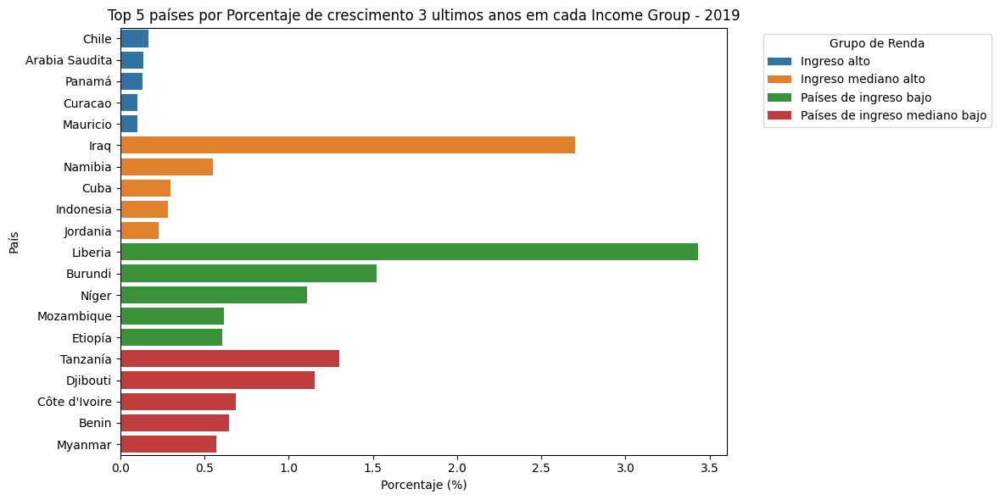

CHALLENGE MERCADOLIBRE
“DIGITAL LINE SA”
Índice
- Contextualização
- Objetivo da Análise
- Entendimento de Tabelas
- Perspectiva do Mercado Argentino
- Perspectiva do Mercado Global
- Recomendações Finais
Contextualização
A DIGITAL LINE SA é uma multinacional com operações em todos os continentes, tendo o setor de telecomunicações como seu principal negócio. A empresa possui um perfil arrojado e histórico de adaptação a mudanças de mercado.
Recentemente, a empresa obteve bons resultados e acumula liquidez em dólar, o que abre oportunidades de investimento. O conselho de administração está analisando a possibilidade de entrar no setor de internet na Argentina, um país que, embora enfrente dificuldades econômicas, oferece ativos com preços atrativos.
A decisão precisa ser tomada com agilidade. O presidente do conselho, Mike Keller, necessita de um dashboard analítico com os principais indicadores que permitam avaliar rapidamente os riscos e oportunidades desse mercado.
O desafio consiste em estruturar esse painel com base nos dados fornecidos e complementá-los, se necessário, para embasar a decisão da diretoria.
Objetivo da Análise
O objetivo desta análise é construir um dashboard estratégico com base nos dados fornecidos, que permita responder à seguinte pergunta:
“Vale a pena investir no setor de internet na Argentina neste momento?”
Para isso, serão exploradas: - Tendências históricas do mercado argentino (faturamento, acessos, penetração etc.); - Indicadores de crescimento, competitividade e maturidade do setor; - Comparativos globais e regionais (ex: América Latina, países de renda semelhante); - Classificações por velocidade, tecnologia e banda de acesso.
A análise servirá como base para a tomada de decisão pelo conselho da DIGITAL LINE SA.
Entendimento de Tabelas
- Facturación Mercado Argentino: Faturamento do mercado argentino ao longo do tempo;
- Share de mercado Argentina: Participação de mercado das principais empresas do país;
- Acceso a internet en Argentina: Percentual da população com acesso à internet.
- Mercados Navegando: Investimentos realizados pela empresa em sua entrada em diferentes países;
- Población mundial: Dados históricos da população global;
- Usuarios de internet global: Percentual de usuários de internet por país;
- IDE: Investimento Direto Estrangeiro por país;
- GDP: Produto Interno Bruto por país;
- Defaults: Dados de inadimplência por país;
- Riesgo país: Índice de risco-país;
- Tipo de cambio USD: Cotação histórica do dólar;
- Países: Lista de países e suas classificações.
Perspectiva do Mercado Argentino

- O mercado é dominado por 4 grandes empresas, sendo que uma delas detém 50% de participação. As demais dividem 40%, configurando um ambiente competitivo concentrado.
- Crescimento consistente de faturamento trimestral, com aceleração significativa nos últimos dois anos.
- Faturamento e velocidade média de download são os indicadores com maior aceleração — demonstrando potencial de crescimento.
- Penetração e acesso à internet permanecem estáveis e correlacionados, com baixa variação negativa.
- Velocidades entre 20–30 Mbps são voláteis, mas com altos picos de crescimento.
- A velocidade acima de 30 Mbps cresce fortemente, representando um segmento estratégico para entrada.
- Acessos até 512 Kbps estão em queda acentuada — tendência a ser monitorada.

- Tecnologias Wireless e “Outros” mostram crescimento expressivo — sugerem novas preferências de consumo ou mudanças estruturais.
- Banda larga é muito mais estável e mantém crescimento contínuo.
- Banda estreita apresenta oscilações fortes e sinais de retração.
Perspectiva do Mercado Global
- Países de renda média alta respondem melhor aos investimentos realizados, com boa relação entre aporte e market share.
- Europa e Ásia Central lideram em penetração de internet.
- América Latina e Caribe apresentam penetração próxima de 50%, sendo relevante para estratégias regionais.

- Argentina está na 3ª posição em penetração dentro da região, reforçando o seu potencial de mercado.

- Argentina não aparece entre os 5 principais países de renda média alta, o que indica potencial ainda não realizado.

- Argentina está na 9ª posição no grupo “Renda Média Alta”, o que ainda indica espaço para crescimento.
Velocidade de crescimento de usuários (média dos últimos 3 anos)

- Oriente Médio e África Subsaariana lideram em crescimento.
- América Latina está entre as regiões com menor crescimento recente.
- Argentina mantém crescimento constante, embora países do Caribe e o Chile liderem.
- Argentina aparece na 22ª posição, indicando crescimento estável porém inferior ao de seus vizinhos regionais.

- Iraque, Namíbia e Cuba lideram entre os países de renda média alta. Argentina não aparece no top 5, indicando desempenho mediano.
- Argentina não está entre os 20 países com maior aceleração no grupo, o que aponta para um ritmo de crescimento linear.
Crescimento populacional

- Argentina apresenta crescimento populacional positivo, em contraste com Venezuela e Porto Rico.
- Está na 15ª posição no ranking da região, o que é favorável ao potencial de expansão de mercado.
Risco País

- Argentina é o 2º país com maior risco na América Latina e Caribe.
- Apesar disso, o cenário de desvalorização dos ativos pode representar uma oportunidade de entrada com alto potencial de retorno no médio/longo prazo.
Recomendações Finais
A partir da análise realizada, é possível concluir que:
- A Argentina demonstra potencial para expansão no setor de internet, principalmente devido ao crescimento em velocidade média de conexão, faturamento e infraestrutura de alta velocidade.
- O mercado é concentrado, com poucas empresas dominando o setor — isso representa tanto uma barreira de entrada quanto uma oportunidade de diferenciação competitiva.
- A banda larga e as tecnologias wireless apresentam crescimento, reforçando a viabilidade de ofertas modernas e premium.
- Embora a Argentina não esteja entre os países de maior aceleração, seu ritmo de crescimento constante, somado a um cenário populacional favorável, suporta uma estratégia de investimento gradual e segmentada.
- O risco-país elevado exige cautela, mas também pode significar vantagem competitiva para investidores dispostos a aceitar volatilidade em troca de potencial de valorização futura.
Recomendação
Recomenda-se a entrada estratégica no mercado argentino, com foco em:
- Produtos de alta velocidade e tecnologias emergentes (wireless, fibra);
- Regiões urbanas com infraestrutura em crescimento;
- Monitoramento contínuo do risco-país e flexibilidade para adaptação de estratégia conforme o cenário político e econômico;
- Apostas progressivas, priorizando nichos de maior potencial, com escalonamento conforme a resposta do mercado.